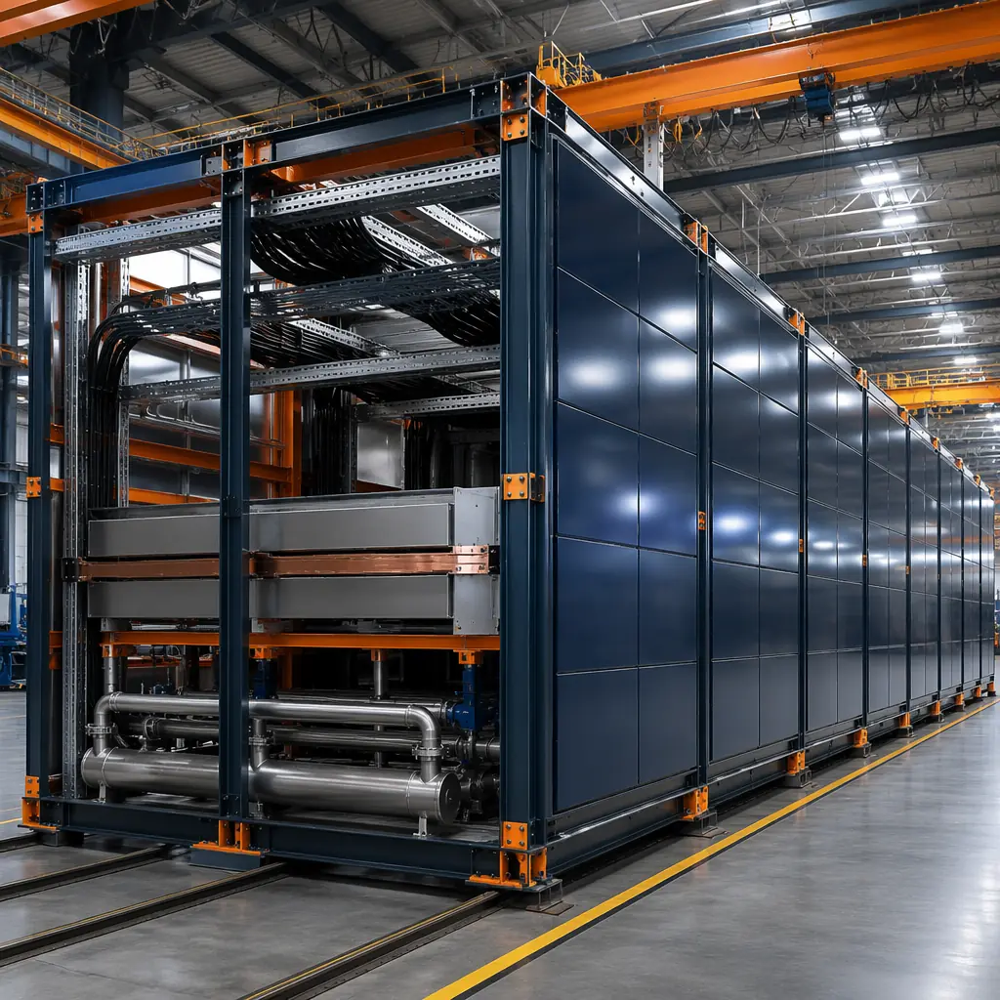
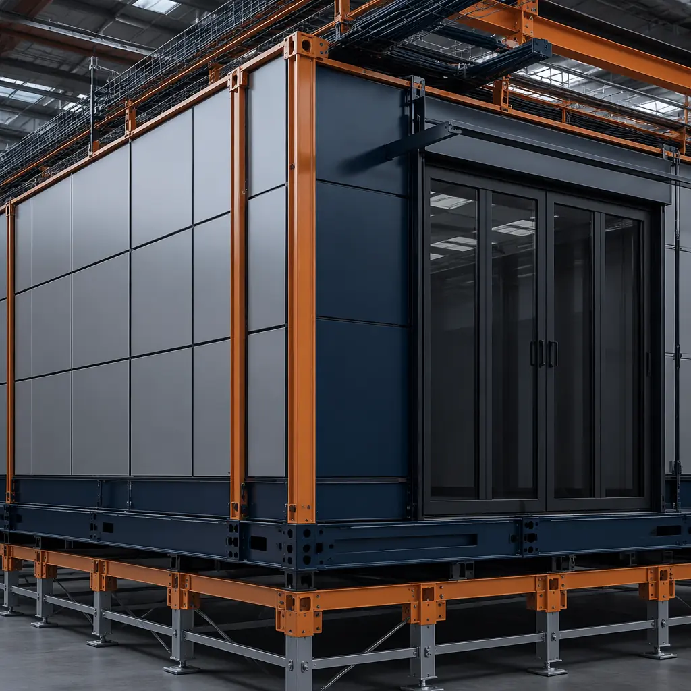
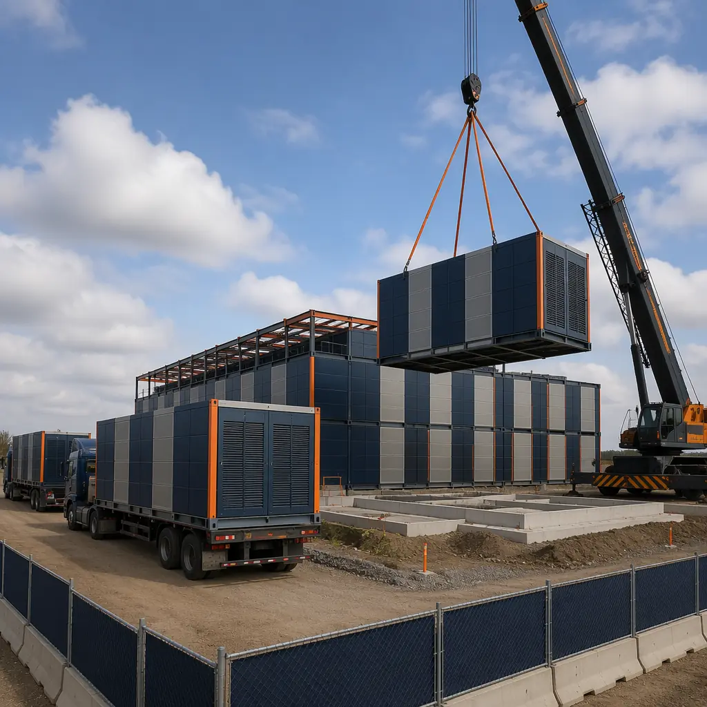
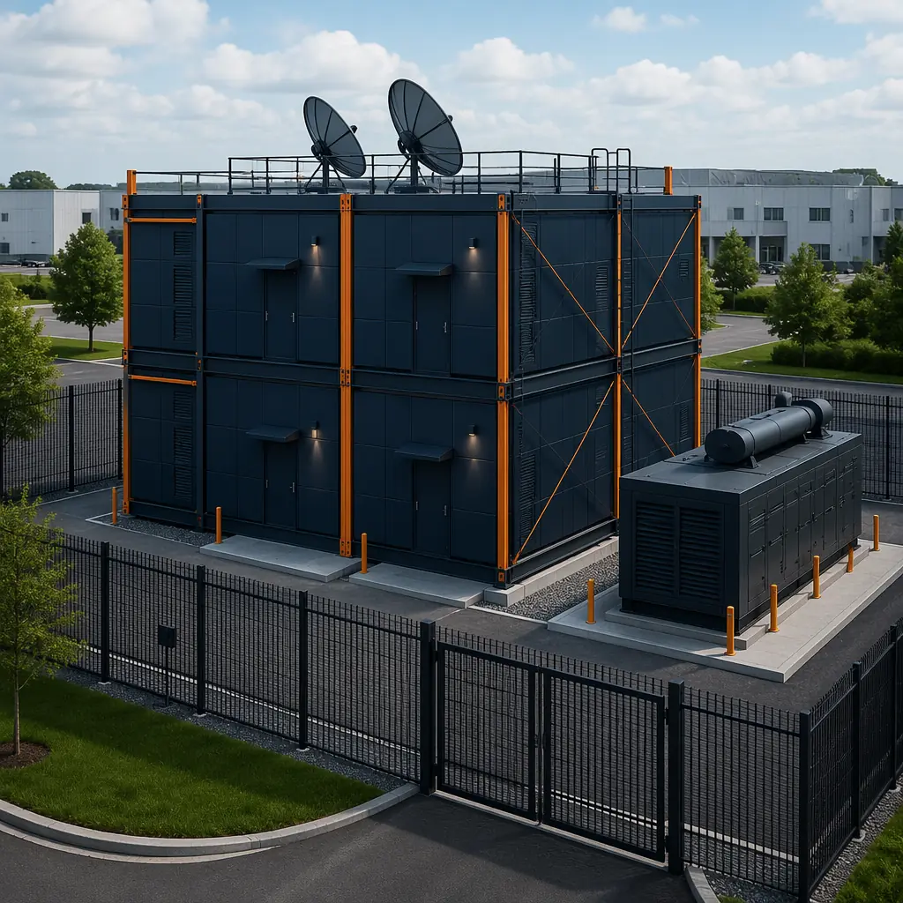

The global data center construction market is projected to reach $380 billion by 2030, driven by AI workloads, cloud expansion, and edge computing demands. Yet the industry's biggest bottleneck isn't chip supply or power availability — it's construction speed. A traditional hyperscale data center takes 18-24 months from groundbreaking to commissioning. For colocation providers losing revenue every month a facility sits incomplete, and for enterprises racing to deploy edge capacity, that timeline is unacceptable. Modular prefabricated data center construction cuts this to 9-12 months — without compromising power density, cooling performance, or Tier certification requirements.

Why Data Center Construction Is Broken
The traditional approach to building data centers suffers from three structural inefficiencies that modular construction eliminates:
- Sequential dependency: Traditional builds follow a rigid sequence — foundation → steel → enclosure → MEP → commissioning. Weather delays at any stage cascade through the entire schedule. A 4-week rain delay during structural steel erection pushes commissioning back by 6-8 weeks once subcontractor rescheduling is factored in.
- Skilled labor scarcity: Data center construction requires specialized trades: high-voltage electricians, mission-critical HVAC technicians, and BMS integrators. These professionals are in shorter supply than ever — the Uptime Institute reports 80% of data center operators cite construction labor as a top-3 risk to project timelines.
- On-site quality variability: Even with rigorous inspection protocols, site-built data halls have inherent quality variation. A cold aisle containment seal that's 98% tight at one facility may be 94% at another, creating hot spots that degrade equipment reliability over time.
These aren't marginal problems. McKinsey estimates that data center construction delays cost the industry $15 billion annually in lost revenue alone — not counting the competitive damage of delayed market entry. As we documented in our comparison of modular versus traditional construction, factory-controlled production eliminates the root causes of these delays.
How Modular Data Centers Work
A modular data center isn't a shipping container with servers — that's a micro data center, useful for 1-4 racks. What MODURA delivers is a modular data hall: a fully engineered, factory-built structural module that arrives on site with its building envelope complete, internal MEP rough-in installed, and pathways for power, cooling, and networking pre-routed. Multiple modules connect on site to form a complete data hall, with final connections, commissioning, and equipment installation completed after assembly.

Key Components of a Modular Data Hall
| Component | Traditional Site-Built | Modular Factory-Built |
|---|---|---|
| Structural steel & enclosure | 12-16 weeks on site | 8-10 weeks in factory, concurrent with site work |
| Electrical rough-in | 6-8 weeks after enclosure | Integrated during module assembly |
| Cooling pipework | 4-6 weeks, weather-dependent | Pre-routed in factory, joints at module seams |
| Raised floor & containment | 3-4 weeks on site | Pre-installed to ±2mm tolerance |
| Commissioning readiness | Week 60-72 | Week 36-44 |
Power Density and Cooling: The Modular Advantage
Modern AI training clusters routinely draw 25-40 kW per rack — double what a typical enterprise data hall was designed for five years ago. Retrofitting a 2019-era facility for 30 kW/rack density means replacing busway, upgrading chilled water distribution, and often reinforcing floor slabs — a 12-month project that runs in a live data hall, risking downtime.
Modular construction addresses this at the design stage. Because modules are engineered as complete subsystems, each can be specified for a target power density — 15 kW/rack for general colocation, 30 kW/rack for GPU clusters, or even 50 kW/rack with direct-to-chip liquid cooling integration. The module's structural steel frame is sized for the anticipated equipment load, and cable trays, busway pathways, and chilled water headers are pre-sized accordingly. A colocation operator running a 50-50 mix of 10 kW and 30 kW density customers simply orders the appropriate module types — no future retrofit required.

Cooling Architecture Flexibility
Modular data halls support every major cooling topology:
- Chilled water (CRAH): Pre-routed supply/return headers terminate at module joints, connected with flanged couplings during site assembly. Tested to 300 PSI in factory before shipping.
- Direct expansion (DX): Refrigerant piping pre-installed, condenser pads integrated into module roof structure. Each module can support independent DX circuits for N+1 redundancy.
- Rear-door heat exchangers: Module width accommodates 1200mm-deep racks with RDHx — no custom engineering required.
- Direct-to-chip liquid cooling: Facility water headers pre-sized for secondary loop flow rates up to 200 L/min per module, supporting CDUs at each row end.
This flexibility matters because cooling represents 30-40% of a data center's total energy consumption. A well-designed modular data hall with hot/cold aisle containment tight to ±1°C setpoint tolerance — verified in factory before shipping — operates at a PUE of 1.15-1.25, compared to 1.4-1.6 for the average site-built facility. That delta of 0.25 PUE on a 5 MW facility saves approximately $1.1 million annually at $0.10/kWh. Over a 15-year facility life, modular construction's energy efficiency alone can offset the entire construction premium — a pattern consistent with the economics we analyzed in our detailed modular construction ROI analysis.
Edge Computing: The Killer App for Modular
Edge data centers — small-footprint facilities located close to end users to reduce latency — are the fastest-growing segment of the market. IDC projects 800,000 new edge sites globally by 2028, driven by 5G, autonomous vehicles, and real-time AI inference. Traditional construction cannot serve this market: a 2 MW edge facility in a secondary city still requires the same engineering, permitting, and construction mobilization as a 50 MW hyperscale campus, just at a fraction of the budget to absorb overhead.
Modular edge deployment solves this mismatch. A 2 MW edge data hall — approximately 600 m² — can be delivered as 8-12 factory-built modules, transported to site on standard flatbed trailers, and assembled in 4-6 weeks of on-site activity. This approach has been validated across 500+ projects in 18 countries, where MODURA's factory-controlled production has consistently delivered buildings that meet or exceed their design specifications.

Edge Deployment Economics
Consider a colocation provider needing 5 edge facilities across the US Southeast to serve a cloud customer's latency requirements. Traditional approach: 5 separate general contractors, 5 permitting processes running in parallel (but with no shared learning), 5 project management teams, total program duration 22-28 months. Modular approach: single factory produces all 5 facility modules sequentially on one production line, site crews mobilize sequentially, program duration 14-18 months. The learning curve compounds: the fifth module set comes off the line approximately 15% faster than the first, and site assembly crews cut per-site duration from 6 weeks to 4.
This is the same parallel-production advantage that makes modular construction ideal for multi-property hotel programs and healthcare network expansions. For data center operators, the edge use case represents the strongest ROI case for modular because it maximizes the factory advantage across multiple deployments while minimizing the overhead penalty of traditional construction at small scale.

Colocation and Multi-Tenant Facilities
Colocation operators face a unique challenge: they must build capacity speculatively — before tenants are signed — but can't afford to build wrong. A 10 MW colocation hall configured for 8 kW/rack average density will struggle to sell to an AI customer needing 25 kW/rack. Conversely, overbuilding all halls for 30 kW/rack wastes capital on infrastructure that low-density tenants don't need.
Modular data halls give colocation providers density flexibility at the module level. A 20 MW facility can be configured as:
- Hall A: 6 modules at 15 kW/rack (enterprise colocation, 4 MW total)
- Hall B: 4 modules at 25 kW/rack (GPU-as-a-service, 4 MW total)
- Hall C: 8 modules at 10 kW/rack (SaaS hosting, 6 MW total)
- Hall D: 4 modules at 30 kW/rack (AI training, 6 MW total)
Each hall is physically identical from a building envelope perspective — same module dimensions, same steel frame — but the internal MEP differs. Factory production makes this economically viable because the variation happens on a controlled assembly line, not a chaotic construction site. This modular-density approach also future-proofs the facility: when the market shifts toward higher density, individual halls can be reconfigured during a planned maintenance window without affecting adjacent operations. Our experience with mixed-use modular developments confirms that module-level flexibility is one of the strongest long-term value propositions of prefabricated construction.
Tier Certification and Compliance
A common objection to modular data centers is that they can't achieve Uptime Institute Tier III certification. This was true in 2010. Today it's incorrect. Modular data halls achieve Tier III certification through the same path as site-built facilities: concurrent maintainability demonstrated in design documents, factory testing of critical subsystems, and on-site commissioning verification.
In practice, modular construction offers distinct advantages for certification:
- Factory witness testing: Electrical distribution, cooling loops, and BMS are pre-tested in the factory with documentation that satisfies Tier certification requirements. What would be witnessed over multiple site visits is condensed into a single factory acceptance test.
- ±2mm dimensional tolerance: Cold aisle containment performance depends on precise physical geometry. Factory jigs achieve tolerances that site carpentry cannot match — containment seals tested to 99.5%+ tightness.
- Documented QA chain: Every module has a digital record of materials, weld inspections, pressure tests, and electrical continuity checks. For a Tier III-certified facility, this documentation trail is audit-ready from day one.
MODURA's manufacturing facilities operate under ISO 9001 quality management and ISO 14001 environmental management — the same standards framework used by mission-critical equipment manufacturers. This isn't a marketing claim; it's an audited certification that directly supports the compliance requirements of regulated industries, from financial services to sustainable infrastructure mandates increasingly required by local building codes.
Is Modular Right for Your Data Center Project?
Modular data center construction delivers the strongest advantage when your project has one or more of these characteristics:
- Time-to-market pressure: You need revenue-generating capacity in 9-12 months, not 18-24
- Edge or multi-site program: 3+ facilities where factory learning curve compounds across deployments
- Density diversity: Mix of low, medium, and high-density tenants requiring different MEP configurations
- Quality-critical application: Financial services, healthcare, or government workloads where ±1°C cooling and 99.995% uptime are non-negotiable
- Brownfield or constrained site: Urban infill locations where 18 months of on-site construction activity isn't feasible
For large hyperscale campuses (100+ MW), where the sheer repetition of identical data halls justifies the overhead of on-site construction, traditional methods remain competitive — but even hyperscalers are adopting modular for their edge and secondary-market facilities where scale alone doesn't carry the efficiency. Whether you're deploying a 2 MW edge pod or planning a 20 MW colocation campus, the fundamental question is the same: can you afford to wait 18 months for capacity that modular construction can deliver in 9?
MODURA brings 500+ completed modular projects across 18 countries and 4 ISO-certified factories to every engagement. If you're evaluating construction options for a data center project — from edge computing to multi-tenant colocation — contact our commercial team for a free feasibility assessment including timeline analysis, cost comparison against traditional construction, and a build program aligned to your capacity delivery requirements.